Aula - Transformações, ponderação e regressão robusta.
Vamos fazer uma análise de regressão linear considerando a concentração de ozônio como resposta e temperatura, unidade e ibh como preditoras.
ozone2 <- subset(ozone, select = c('O3', 'temp', 'humidity', 'ibh'))
pairs(ozone2, pch = 20, cex = 1.4)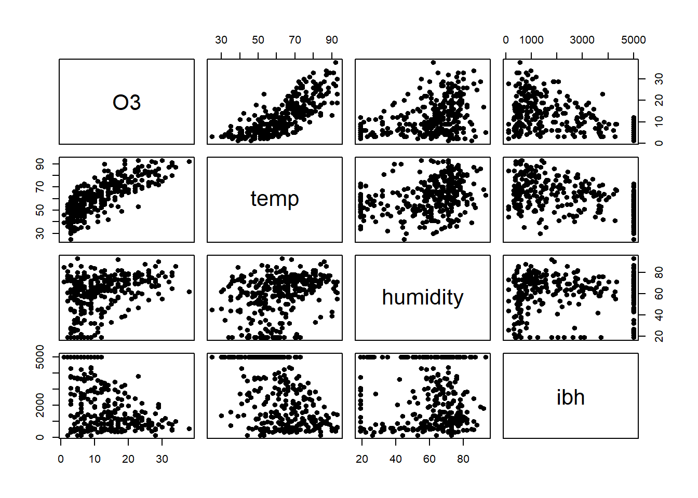
Podemos observar relações não lineares, evidente variância não constante, alguma evidência de assimetria. Claramente são apenas evidências baseadas em descritivas bivariadas.
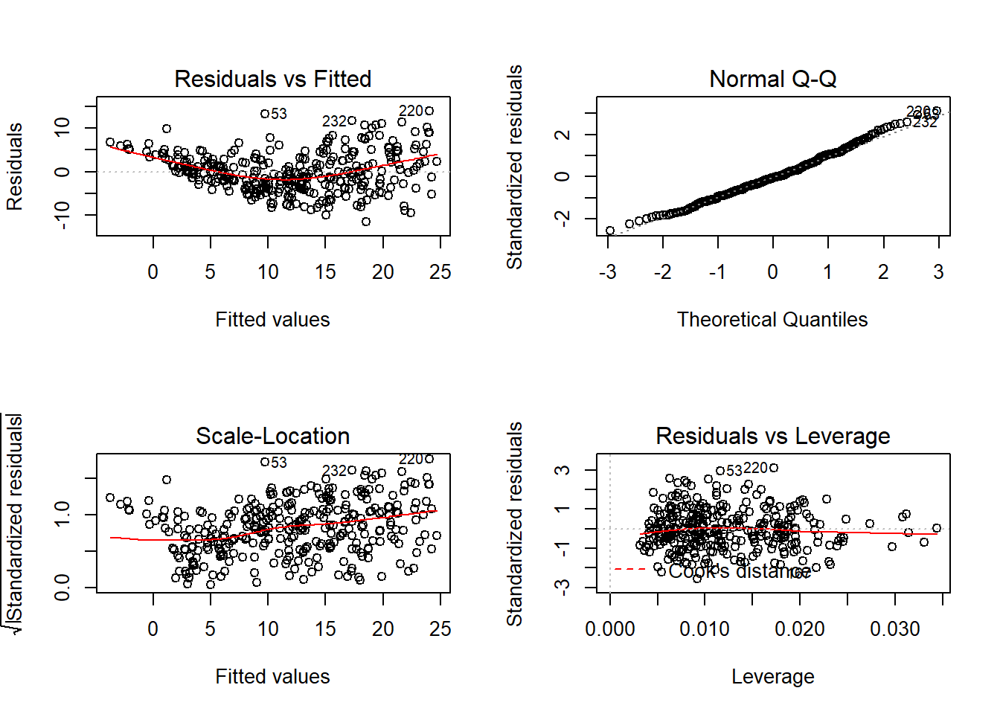
Há fortes indícios de variância não constante para os erros, alguma evidência de não normalidade.
## Non-constant Variance Score Test
## Variance formula: ~ fitted.values
## Chisquare = 32.35328, Df = 1, p = 1.2854e-08A hipótese de variância constante é rejeitada.
##
## Shapiro-Wilk normality test
##
## data: rstandard(ajuste)
## W = 0.9919, p-value = 0.06875Vamos usar o método de Box-Cox para identificar uma transformação adequada.
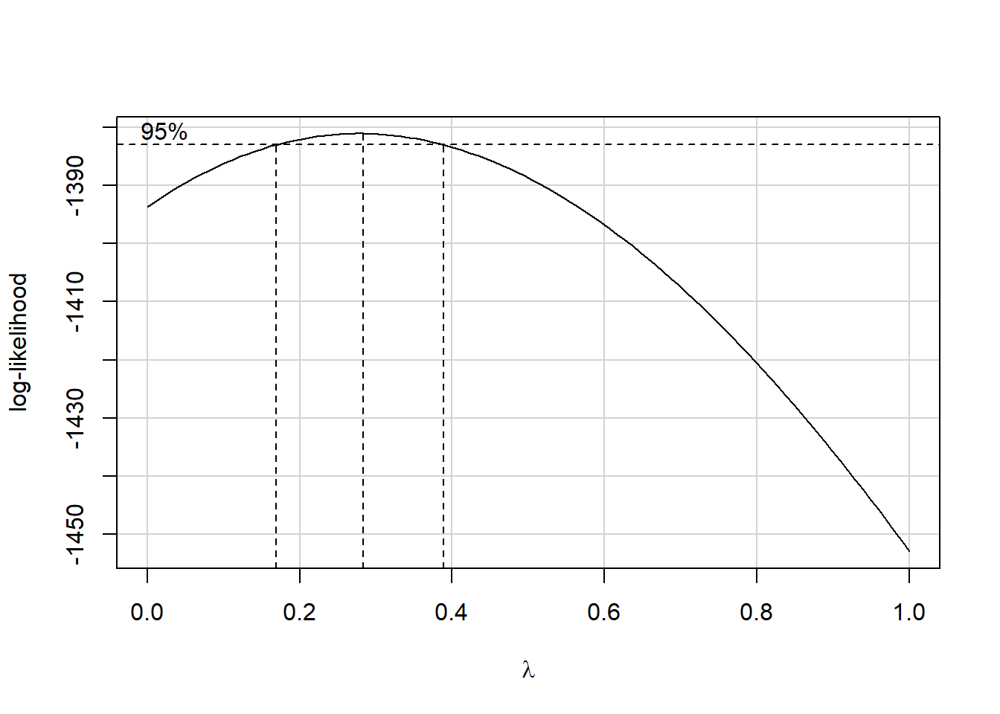
## [1] 0.2828283Uma transformação do tipo raiz cúbica é indicada.
ozone2$O3_trans <- ozone2$O3^(1/3) # Variável transformada.
ajuste2 <- lm(O3_trans ~ temp + humidity + ibh, data = ozone2)
par(mfrow = c(2,2))
plot(ajuste2)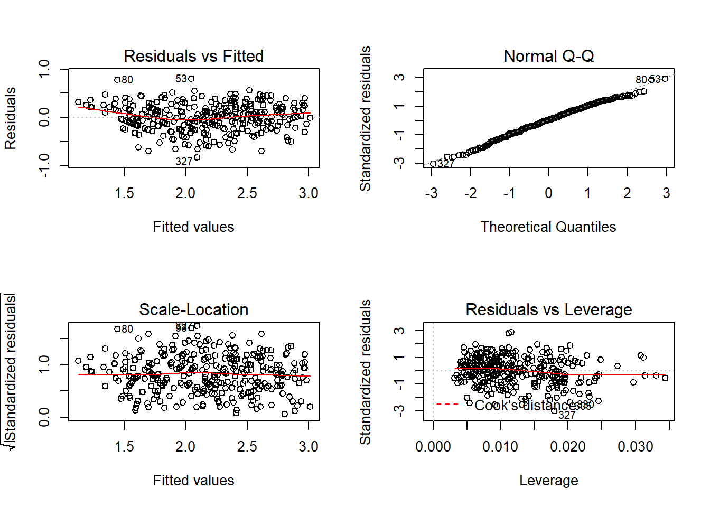
## Non-constant Variance Score Test
## Variance formula: ~ fitted.values
## Chisquare = 0.3076184, Df = 1, p = 0.57915##
## Shapiro-Wilk normality test
##
## data: rstandard(ajuste2)
## W = 0.99324, p-value = 0.1444Observe que não há mais evidências contrárias às hipóteses de variância constante e normalidade. Os gráficos de resíduos têm um padrão bem mais adequado, indicando um bom ajuste.
Vamos fazer as predições e produzir um gráfico de efeitos. Vamos fixar temperatura e ibh na média, e predizer a concentração de ozônio para uma sequência de valores para umidade.
Grid de valores para umidade.
novos_dados <- expand.grid(temp = mean(ozone2$temp), ibh = mean(ozone2$ibh),
humidity = novo_humidity)Criando a base para predição.
predic <- predict(ajuste2, newdata = novos_dados, interval = "prediction")
predic_orig <- predic^3 ### Predições na escala original.
plot(novo_humidity, predic_orig[,1], type = 'l', ylim = c(0,30), col = 'red',
xlab = 'Umidade', ylab = 'O3')
lines(novo_humidity, predic_orig[,2], col = 'red', lty = 2)
lines(novo_humidity, predic_orig[,3], col = 'red', lty = 2)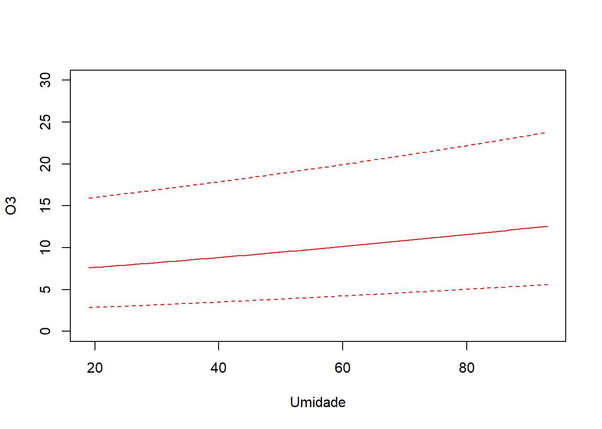
Gráfico de efeitos.
Vamos utilizar a base de dados cars, disponível na base do R.
## speed dist
## 1 4 2
## 2 4 10
## 3 7 4## speed dist
## Min. : 4.0 Min. : 2.00
## 1st Qu.:12.0 1st Qu.: 26.00
## Median :15.0 Median : 36.00
## Mean :15.4 Mean : 42.98
## 3rd Qu.:19.0 3rd Qu.: 56.00
## Max. :25.0 Max. :120.00par(cex = 1.4, las = 1)
plot(cars,pch=20,xlab='Velocidade (mph)',ylab='Distância de frenagem (m)')
with(cars,lines(lowess(dist~speed),col='red',lwd=2)) 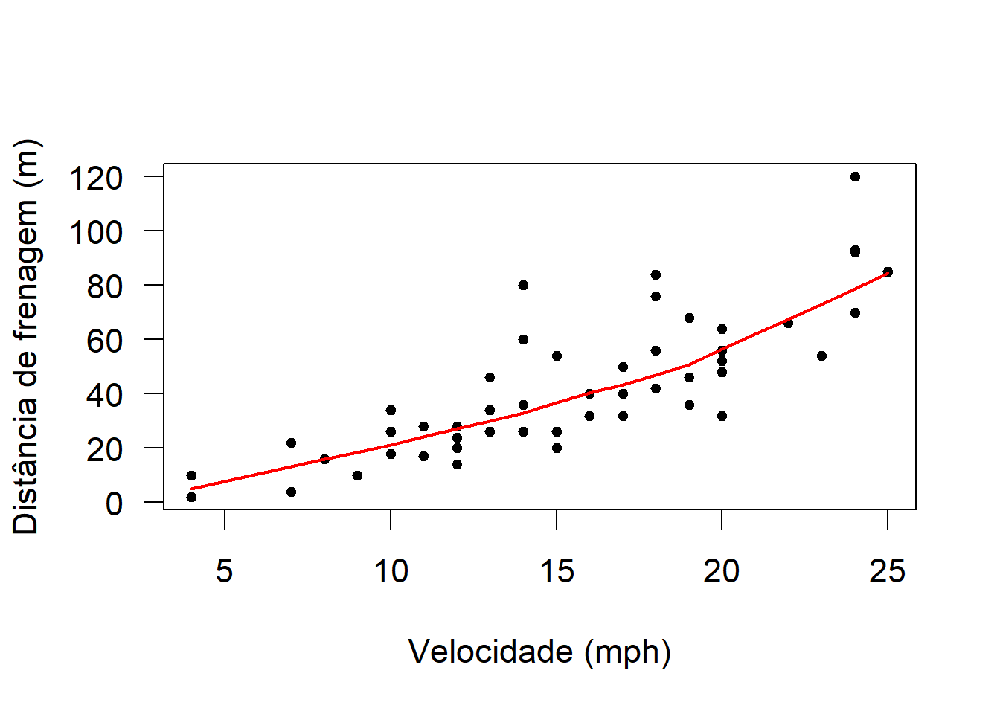
A dispersão da distância de frenagem parece aumentar conforme a velocidade.
##
## Call:
## lm(formula = dist ~ speed, data = cars)
##
## Residuals:
## Min 1Q Median 3Q Max
## -29.069 -9.525 -2.272 9.215 43.201
##
## Coefficients:
## Estimate Std. Error t value Pr(>|t|)
## (Intercept) -17.5791 6.7584 -2.601 0.0123 *
## speed 3.9324 0.4155 9.464 1.49e-12 ***
## ---
## Signif. codes: 0 '***' 0.001 '**' 0.01 '*' 0.05 '.' 0.1 ' ' 1
##
## Residual standard error: 15.38 on 48 degrees of freedom
## Multiple R-squared: 0.6511, Adjusted R-squared: 0.6438
## F-statistic: 89.57 on 1 and 48 DF, p-value: 1.49e-12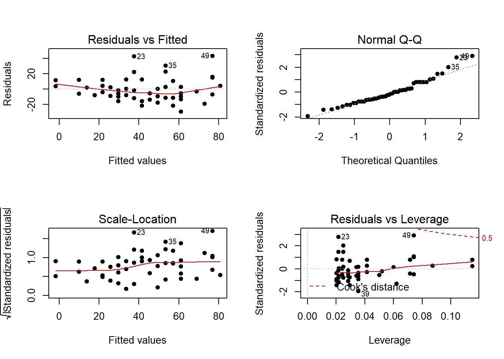
Os resíduos reforçam a evidência de variância não constante.
## Non-constant Variance Score Test
## Variance formula: ~ fitted.values
## Chisquare = 4.650233, Df = 1, p = 0.031049Como a hipótese nula é a de variância constante para os erros, temos evidência significativa de variância não constante ao nível de 5%.
vamos assumir que a variância aumenta linearmente conforme a velocidade (x). Assim, os pesos vão ser definidos por 1/x.
##
## Call:
## lm(formula = dist ~ speed, data = cars)
##
## Residuals:
## Min 1Q Median 3Q Max
## -29.069 -9.525 -2.272 9.215 43.201
##
## Coefficients:
## Estimate Std. Error t value Pr(>|t|)
## (Intercept) -17.5791 6.7584 -2.601 0.0123 *
## speed 3.9324 0.4155 9.464 1.49e-12 ***
## ---
## Signif. codes: 0 '***' 0.001 '**' 0.01 '*' 0.05 '.' 0.1 ' ' 1
##
## Residual standard error: 15.38 on 48 degrees of freedom
## Multiple R-squared: 0.6511, Adjusted R-squared: 0.6438
## F-statistic: 89.57 on 1 and 48 DF, p-value: 1.49e-12## Calls:
## 1: lm(formula = dist ~ speed, data = cars)
## 2: lm(formula = dist ~ speed, data = cars, weights = 1/speed)
##
## Model 1 Model 2
## (Intercept) -17.58 -12.97
## SE 6.76 4.88
## z -2.60 -2.66
## Pr(>|z|) 0.0093 0.0079
##
## speed 3.932 3.633
## SE 0.416 0.345
## z 9.46 10.52
## Pr(>|z|) <2e-16 <2e-16
## Comparação das estimativas e erros fornecidas pelos dois modelos.
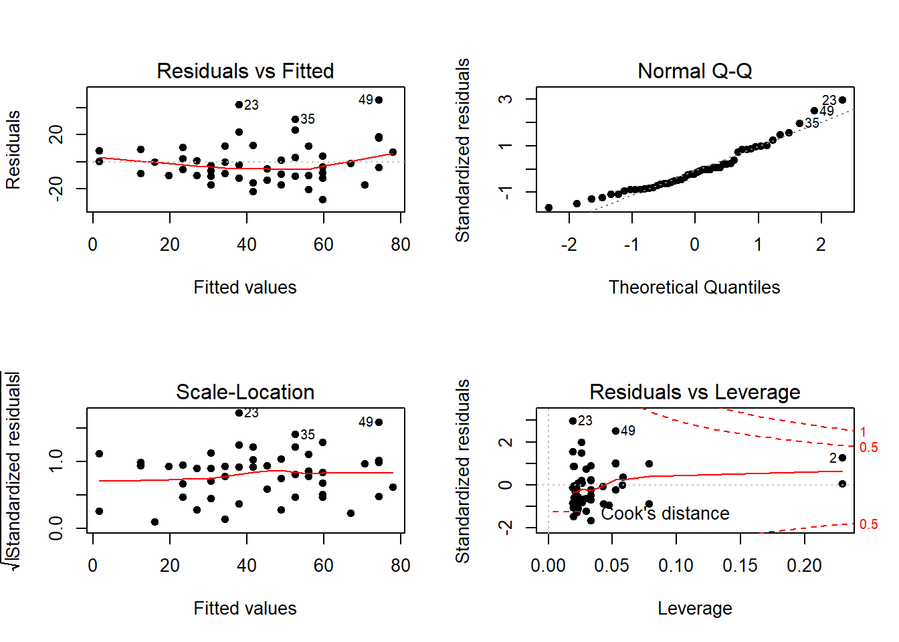
Os resíduos reforçam a evidência de variância não constante.
par(mfrow = c(1,2))
plot(ajuste, pch = 20, cex = 1.4, which = 3)
plot(ajuste2, pch = 20, cex = 1.4, which = 3)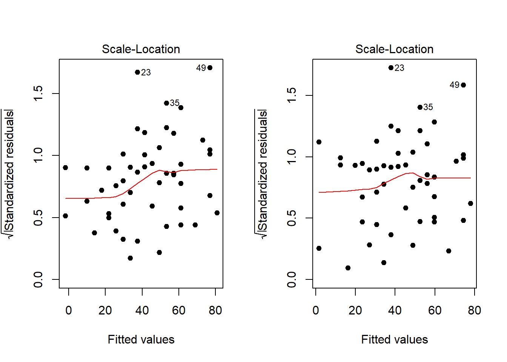
Visualmente, o padrão de variância não constante é menos acentuado.
## Non-constant Variance Score Test
## Variance formula: ~ fitted.values
## Chisquare = 0.99636, Df = 1, p = 0.31819A hipótese de variância constante já não é rejeitada.
Agora, vamos assumir uma forma paramétrica para a relação do desvio padrão dos erros com relação à velocidade (x) e estimar os parâmetros. Vamos assumir DP(Erros) = theta1 + velocidade^theta2 e usar a função gls, pacote nlme, para estimar, conjuntamente e por máxima verossimilhança, os betas e os thetas.
ajuste3 <- gls(dist ~ speed, data = cars, weight = varConstPower(form=~speed))
residuos3 <- residuals(ajuste3, type='normalized')
plot(cars$speed, residuos3, xlab = 'Velociadade (mph)', ylab = 'Resíduos',
pch = 20, cex = 1.5, ylim = c(-2,3))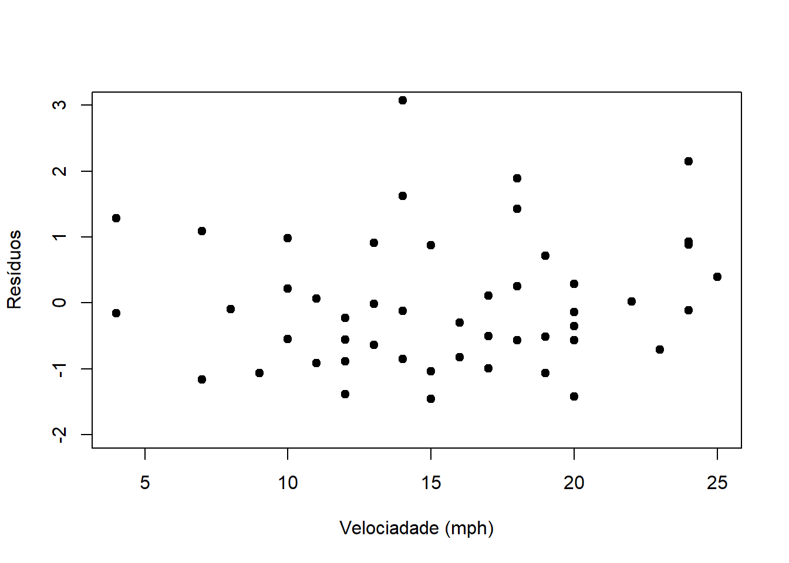
## Generalized least squares fit by REML
## Model: dist ~ speed
## Data: cars
## AIC BIC logLik
## 412.8352 422.1912 -201.4176
##
## Variance function:
## Structure: Constant plus power of variance covariate
## Formula: ~speed
## Parameter estimates:
## const power
## 3.160369 1.022362
##
## Coefficients:
## Value Std.Error t-value p-value
## (Intercept) -11.085392 4.052384 -2.735524 0.0087
## speed 3.484163 0.320237 10.879947 0.0000
##
## Correlation:
## (Intr)
## speed -0.9
##
## Standardized residuals:
## Min Q1 Med Q3 Max
## -1.4520582 -0.6898223 -0.1308282 0.6375030 3.0757001
##
## Residual standard error: 0.7636964
## Degrees of freedom: 50 total; 48 residualObserve que theta2 (parâmetro de potência) é estimado em 1.022. Assim, temos que a relação entre DP(erros) e x (e entre Var(erros) e x) é aproximadamente linear.
## Warning in compareCoefs(ajuste, ajuste2, ajuste3, zvals = TRUE, pvals =
## TRUE): models to be compared are of different classes## Calls:
## 1: lm(formula = dist ~ speed, data = cars)
## 2: lm(formula = dist ~ speed, data = cars, weights = 1/speed)
## 3: gls(model = dist ~ speed, data = cars, weights = varConstPower(form
## = ~speed))
##
## Model 1 Model 2 Model 3
## (Intercept) -17.58 -12.97 -11.09
## SE 6.76 4.88 4.05
## z -2.60 -2.66 -2.74
## Pr(>|z|) 0.0093 0.0079 0.0062
##
## speed 3.932 3.633 3.484
## SE 0.416 0.345 0.320
## z 9.46 10.52 10.88
## Pr(>|z|) <2e-16 <2e-16 <2e-16
## Vamos usar a base de dados teengamb, do pacote faraway.
require(faraway)
require(MASS)
require(quantreg)
ajuste <- lm(gamble ~ ., data = teengamb)
x11()
par(mfrow = c(2,2))
plot(ajuste)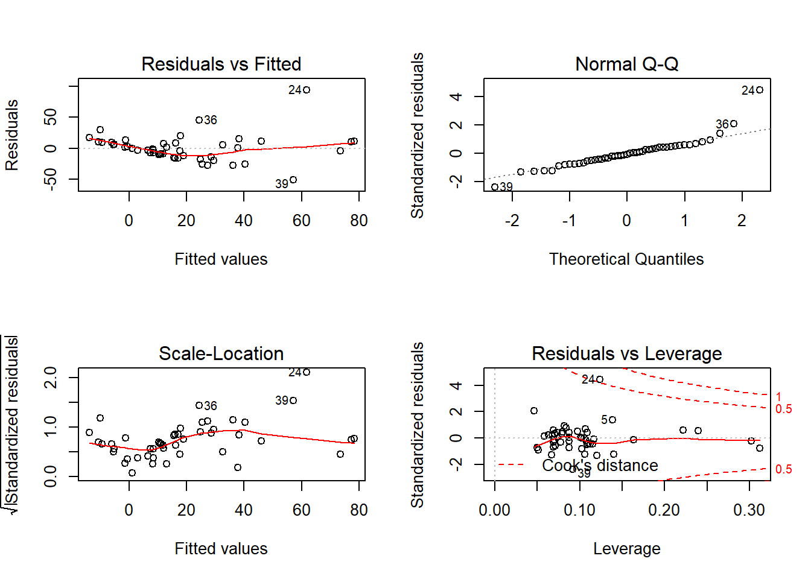
##
## Shapiro-Wilk normality test
##
## data: rstandard(ajuste)
## W = 0.86607, p-value = 7.028e-05Aparentemente os erros não têm distribuição normal, havendo indicação de alguma distribuição com caudas mais pesadas.
Vamos usar regressão robusta, obter os estimadores M baseado no método de Huber.
##
## Call:
## lm(formula = gamble ~ ., data = teengamb)
##
## Residuals:
## Min 1Q Median 3Q Max
## -51.082 -11.320 -1.451 9.452 94.252
##
## Coefficients:
## Estimate Std. Error t value Pr(>|t|)
## (Intercept) 22.55565 17.19680 1.312 0.1968
## sex -22.11833 8.21111 -2.694 0.0101 *
## status 0.05223 0.28111 0.186 0.8535
## income 4.96198 1.02539 4.839 1.79e-05 ***
## verbal -2.95949 2.17215 -1.362 0.1803
## ---
## Signif. codes: 0 '***' 0.001 '**' 0.01 '*' 0.05 '.' 0.1 ' ' 1
##
## Residual standard error: 22.69 on 42 degrees of freedom
## Multiple R-squared: 0.5267, Adjusted R-squared: 0.4816
## F-statistic: 11.69 on 4 and 42 DF, p-value: 1.815e-06##
## Call: rlm(formula = gamble ~ ., data = teengamb, psi = psi.huber)
## Residuals:
## Min 1Q Median 3Q Max
## -46.8651 -8.6030 0.1115 9.1209 101.6901
##
## Coefficients:
## Value Std. Error t value
## (Intercept) 11.7430 13.2238 0.8880
## sex -17.3024 6.3141 -2.7403
## status 0.1352 0.2162 0.6255
## income 4.8296 0.7885 6.1251
## verbal -2.3448 1.6703 -1.4038
##
## Residual standard error: 13.85 on 42 degrees of freedomAs estimativas pontuais apresentaram alguma variação. Os erros padrões são todos menores para a regressão robusta. Embora o resumo do modelo não apresente os p-valores, os efeitos podem ser testados usando os valores t com base na distribuição normal assintótica. No geral, exceto pelas variações numéricas, as conclusões produzidas pelos dois modelos são semelhantes.
Agora usando a função biweight no lugar da huber.
##
## Call: rlm(formula = gamble ~ ., data = teengamb, psi = psi.bisquare)
## Residuals:
## Min 1Q Median 3Q Max
## -43.417 -7.364 1.668 9.589 107.210
##
## Coefficients:
## Value Std. Error t value
## (Intercept) 6.3543 12.5916 0.5046
## sex -14.6451 6.0122 -2.4359
## status 0.2025 0.2058 0.9838
## income 4.5434 0.7508 6.0514
## verbal -2.1164 1.5905 -1.3307
##
## Residual standard error: 13.59 on 42 degrees of freedomOs erros padrões são um pouco menores em relação ao ajuste anterior, novamente se verifica diferença nas estimativas e erros padrões em relação aos resultados do ajuste por mínimos quadrados.
Vamos avaliar os pesos atribuídos às observações no ajuste final.
## [,1] [,2]
## 1 10.650743 1
## 2 9.371132 1
## 3 5.463030 1## [,1] [,2]
## 24 94.25222 0.1831289
## 36 45.60513 0.3959127
## 39 -51.08241 0.3973207As observações 24, 36 e 39 são aquelas mais penalizadas, recebendo menor peso no ajuste. Essas três observações são justamente aquelas destacadas na análise dos resíduos do modelo original como possíveis outliers.
Para o ajuste por least absolute deviations podemos usar a função rq do pacote quantreg.
## Warning in rq.fit.br(x, y, tau = tau, ci = TRUE, ...): Solution may be
## nonunique##
## Call: rq(formula = gamble ~ ., data = teengamb, method = "br")
##
## tau: [1] 0.5
##
## Coefficients:
## coefficients lower bd upper bd
## (Intercept) -0.27592 -10.27119 39.17714
## sex -9.56399 -28.39273 -6.31346
## status 0.34807 -0.14436 0.65626
## income 4.71628 1.12318 6.45524
## verbal -2.44452 -4.65627 0.45141